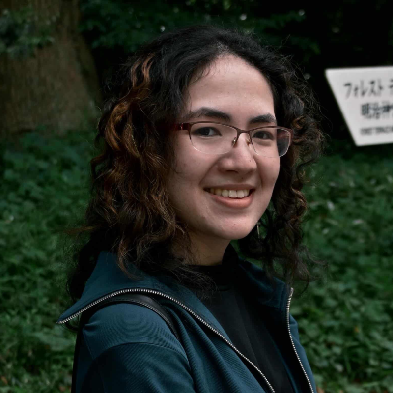

About Me

Hello! I am Annora Streible, a third year student pursuing a Bachelor of Science in Applied Modern Language and Culture: Japanese Option and a minor in Game Design at Rochester Institute of Technology.
I have studied Japanese at a university level for over 4 years and studied abroad in Tokyo, Japan for the Spring 2026 semester at Sophia University. In America, I also participate in several international extracurriculars and opportunities on-campus, such as a program aimed at helping international students practice their English speaking skills outside of class. In addition, I am on the performance team for the school’s Chinese lion dance club. I also participate in various volunteer activities on and off campus.
Outside of these interests, I am also passionate about game design and interactive design as a whole. In my pursuit of this, I gained experience in a variety of both hard and soft skills. I often work on group projects as well, which has given me skills in regards to leadership, communication, teamwork, and planning.
I am currently in my last year of my undergraduate degree, and I am starting to seek an international-based job that allows me to continue engaging with Japanese and using the skills gained from my project experience.
- Languages: Japanese, C#, Java, Python
- Tools: GitHub, Monogame, Unity, Visual Studio Code, Trello, Maya, Clip Studio Paint PRO
- Operating Systems: Windows, iOS